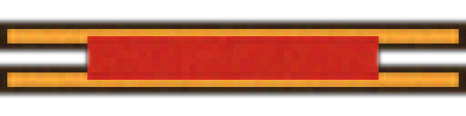
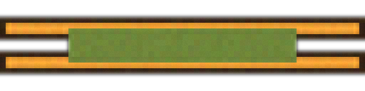
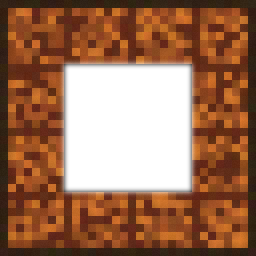
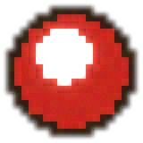

1. Tool hotbar
Wood-socket slots instead of flat parchment squares; the selected slot's ring turns gold rather than getting a whole separate glow sprite. Hover lifts the slot 3px (a "picked up off the belt" read).
2. Spyglass file list
Same wood-framed parchment panel shell every other panel in this mockup uses — "ls for the cluster you're standing in" stays a list, just dressed in the world's materials. Divider flourish separates header from rows.
Courier list rows
3. Crystal orb search
Unrolls in with the same unroll keyframe as the run-scroll (see STYLE.md motion table) — one motion vocabulary for "a parchment surface is arriving," reused everywhere instead of a bespoke animation per overlay.
flat parchment modal
4. Bag tray
Slots keep the thin parchment strip shape (it's a tray of small clippings, not a panel) but swap the hairline border for a gold inset ring when a slot is pasteable, echoing the hotbar's selected-ring language.
parchment rows
5. Editor frame (quill)
A wooden plaque replaces the browser-tab-style header; save/close become wax seals instead of text buttons. Syntax colors are unchanged from editorTheme.ts's cottagecore palette — comment/punctuation now sit on rust (wood-dark) rather than steel gray, see the a11y note in STYLE.md on why.
Courier New, text buttons
6. Encounter banner & victory toast
The ribbon comes in two colorways: crimson for an encounter/error, victory-green for the "all bugs fixed" toast — same asset, different ui_ribbon_*.png.
card, Georgia serif

A Gremlin appeared!TypeError: cannot read property 'water' of undefined

Victory!All bugs fixed in this world.
7. Run parchment
RunOverlay's existing CSS radial-gradient rollers become actual pixel-art dowel end caps. Body keeps its own wood side-rails (2px solid, matching wood-dark) between the two rollers rather than a full 9-slice frame — a scroll's sides are cut paper edges, not a wood-bordered panel.
flat parchment body
> watered
> done
8–10. Monster counter, settings corner, controls card
All three are small HUD chrome — same wood-framed pill/card as everything else, no new frame kind needed.
11. Scene transition concept
Three static stills, not implemented — for reacting to direction only. Page-turn (~420ms, ease-settle): a diagonal parchment/wood wipe sweeps across on cluster change, like turning to the next page. Scroll-unroll (~340ms): reuses the panel-open unroll keyframe for entering a file/editor. Vignette iris (~260ms, linear): a circular closing/opening iris for encounter start/end, cheapest of the three and the one most likely to survive contact with `prefers-reduced-motion` (degrades to a plain fade).
Frame & button raw art (crisp vs. soft)
The crisp source pixel maps (tools/asset-pipeline/src/pixelmaps/ui-*.ts) vs. the softened raster the panels above actually use — same soften() pass as every creature placeholder, cellSize 8.

